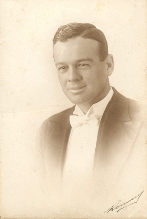
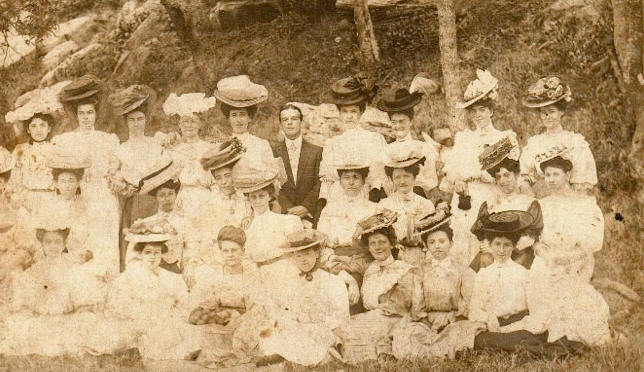

Harry Walker Benson (continued)


(Prospect and Sherwood)
C.A.F.A. 22.1.1926
“Oh, Walker, what have you done?” It is many years since a little watermelon expert first put the query to our aldermanic friend. But it has been oft repeated. For during his occupancy of a portion of this planet Walker Benson has done quite a lot of things. It was on the road to Gundagai that Walker received his introduction to watermelons and other childish delights. His father was an accountant, and, naturally, he saw to it that his son was properly balanced for the serious business of life. That Walker has always kept on the right side of the ledger is an excellent tribute to sound parental tuition. At Paddington Public School he was taught that t-i-l-e-s spelt tiles. But he was not taught that the letters spelt wealth. That knowledge came in later years. Young Benson was one of the good little boys at Paddington Sunday School. It is related that he was once asked by the teacher if he knew anything of Good Friday, “Yes,” came the prompt reply, “he was the chap who kept house for Robinson Crusoe.” After leaving school his course was set for the law, and for a period he believed that litigants were the only people of consequence in the world. But, tiring of continually writing the word “aforesaid”, he drifted into the service of a tobacco firm. His ambitions in that realm eventually ended in smoke – but not until he had learned to correctly define the word “combine.” The gold fever attacked him, and he booked his passage for Westralia. But the only valuable vein that be struck was the realisation of the Golden Rule – “Self first.” The people and conditions of Groperland were rougher than the sand underfoot and soon Walker became recognised as one of the rough diamonds. Fortunately, however, the rasping of the hard life did not whittle away his natural polish.

HELPED THE POOR
The large and representative gathering which followed the remains of the late Mr Harry Walker Benson to the Crematorium on Monday morning was eloquent testimony to the popularity of the deceased. Though he was a man with strong and sometimes unorthodox views, Mr Benson was the personification of bon homie and generosity. Ever sympathetic in a practical way to those in trouble, his memory will be cherished by many a Merrylands family to whom he had been a friend in need. He was always appreciative of a kindness, and it was characteristic of the man that shortly before he died he asked that a certain Merrylands citizens be called on the phone so that he might thank him for little favours extended to him.
Newspaper article in possession of Valerie Benson (maybe SMH)
ONE OF THE FINEST
Holroyd Tributes to Late Walker Benson
Harry Benson came here a comparatively poor man. He made good: and when he did there was nobody poor in the district. He distributed his money right and left, and there will be many people poorer for his dying.
This tribute to the philanthropy of the late Mr Harry Walker Benson was praised by Alderman Shaw at Holroyd Council on Tuesday. The council decided to send a letter of bereavement to the family.
The Mayor (Alderman Maunder) said that it was not only the late Mr Benson’s work as an Alderman that would be remembered.
‘He was known throughout the municipality for his sound judgement in all undertakings.’ He said.
An ex-colleague of the late Mr Benson, Alderman Tucker Jones said the district had lost a worthy citizen.
‘He was a tower of strength’, said
Alderman Jones ‘though some
Always had a good
We used to have arguments.
(This paragraph has a piece missing out of it)
Alderman Campbell; ‘Walker Benson was one of the finest men we had in the municipality. His generosity knew no bounds.’
For a time he fraternised with camels, but they proved much too dry for his hospitable nature. A camel can go for weeks without a drink, but who wants to be a camel? From W.A. he came to Merrylands, to take over the management of a well-known tile business, and, in keeping with the articles that he manufactures, he has found his way to the top. Not that he desires to be over heads of everybody, for Walker is as much at home on the ground floor as the next man. His hobbies comprise almost everything in the category of sport. He is a boxer whose left hand always knows what the right is doing: a wrestler who put a strangle-hold on anything unmanly or objectionable: a tennis player with a minimum of “faults”: and a motorist who does not water the petrol. Recently he bounced into the arena of municipal government, and was joyously “received.” Sooner or later, he will suspend the standing orders while he stands on his dig, and then ----, But why bother about the future. For the present Walker Benson is a bighearted, energetic and popular citizen. May his tiles continue to shelter him from the storms of this uneven life!
Cumberland Argus 1926
Harry with a bevy of beauties at Lady Macquarie’s Chair, Botanic Gardens, Sydney